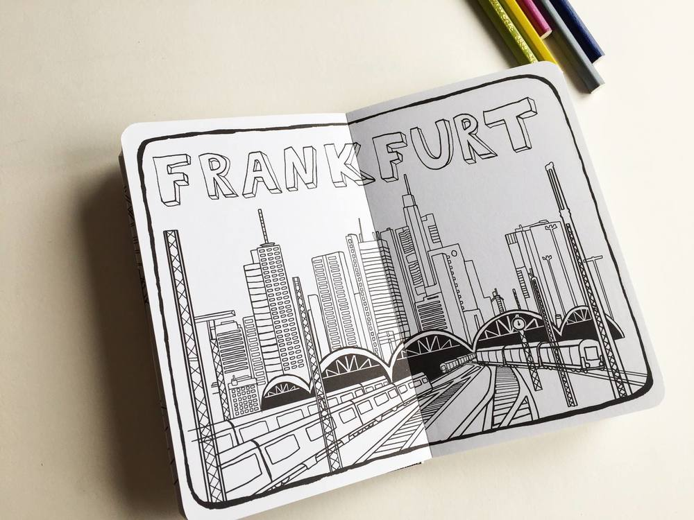
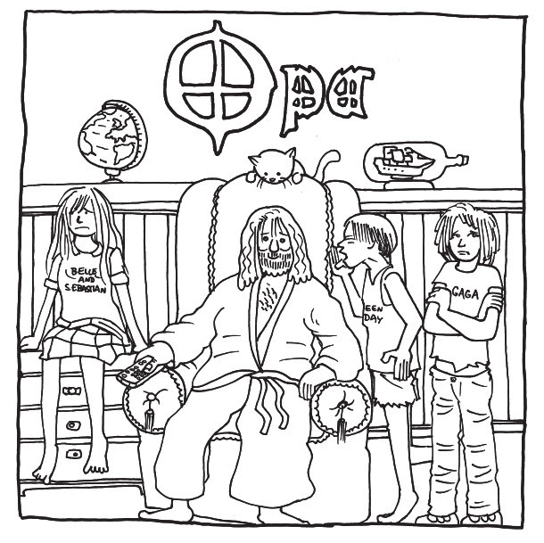

2 Frankfurer Illustrator_innen haben Ausmalbücher für Erwachsene - oder solche für Menschen die es zumindest nominell sind - gemacht
Ausmalbücher für Erwachsene - oder solche für Menschen die es zumindest nominell sind. Hab ich persönlich noch nie gesehen. Dann fallen mir gleich zwei in die Hand. Und beide sind von Frankfurter Illustrator_innen.
Katharina Schmidt und Christopher Tauber. Die eine für den Fischerverlag, der andere als sein eigener Verleger bei Zwerchfell. Wie kommen die beiden auf die Idee und was mögen sie an Ausmalbüchern so gerne? Ich hab mal nachgefragt.
Katharina Schmidt und „Unterwegs entspannen. Ausmalbuch für die Bahn“
„Wenn ich Zug fahre, höre ich gern Musik und schaue raus, wie die Landschaft vorüberzieht, mache Skizzen und Fotos. Aus diesen Bildern und Eindrücken ein Ausmalbuch für Bahnreisende zeichnen, genial! Die Idee dazu kam vom Verlag. Die Leute suchen ja Entspannung und Ausmalbücher scheinen dem sehr dienlich zu sein.“ Damit hat das Projekt für Katharina angefangen. Das Buch hat ein handliches Taschenbuchformat und die Bilder sind überwiegend keine realistischen Abbildungen, eher Collagen aus Szenen, neu komponiert. Warum? „Das ist zum Teil hoffentlich lustiger und interessanter als ein realistisch abgezeichnetes Foto. Stichwort: Wimmelbild. So finden sich dichtgedrängt der Eiffelturm, der Schiefe Turm von Pisa, Big Ben und Kölner Dom Seite an Seite zu einer neuen Stadt zusammengesetzt. Oder die großen »Baukatastrophen« Elbphilharmonie, Stuttgart 21 und der Berliner Flughafen.“
Das Buch ist ein unterhaltsames Wimmel-Such- und Entdeckerbuch und auch so zum Anschauen. Der Zeichenstil hat was Skizzenhaftes, aber auf die eigene Art sortiert und detailreich. Mich erinnert es ein wenig an eine moderne Variante des Mandalas. Natürlich ist das Lieblingsbild von Katharina das von Frankfurt.

Christopher Tauber und „Heavy Metal Malbuch“
Christophers Malbuch ist ein etwas anderer Stil. Was auch vom Thema und den Motiven kommt. Lockerer. Weniger zur Entspannung, als auch zum Austoben. Die Bilder – sowas wie Familienszenen „Jugendliche“, „Cookies“ oder aber auch „Mama“ oder „Karneval“. Aber was erwartet man auch sonst von einem Metal-Malbuch für die „Heavy Family“. Eigentlich war es nicht als „Erwachsenen Malbuch“ gedacht, sondern eher als logische Konsequenz daraus, dass es ja auch Babylätzchen von AC/DC gibt – warum nicht auch dann ein Malbuch für den Familienausflug nach Wacken? Die Idee kam dann auch so gut an, dass das Buch jetzt in die 2. Auflage geht.
Beim Autoren mal nachgefragt, nach Lieblingsmotiv – und warum das Thema Metal: „Mein Lieblingsmotiv ist O wie Opa, bei dem der tatsächliche Großpapa des Metal Pate stand: Ozzy Osbourne. Und ein Malbuch mit Jazz Alben Cover wäre extrem langweilig gewesen.“
Beide machen auch viele andere spannende Projekte. Auf ihren Blogs vorbei schauen lohnt also.


Ersten Kommentar schreiben